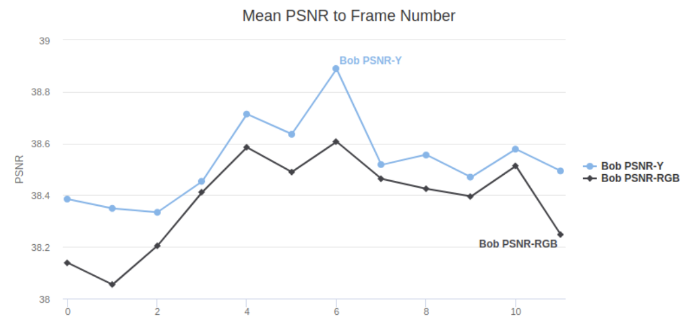
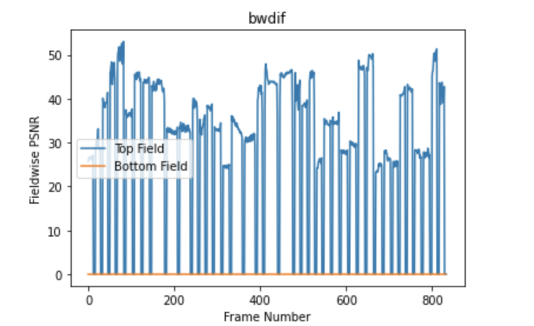

Dataset
Our dataset is constantly updated. Now we have 40 video sequences. Each sequence's length is 1 second.
Resolution of all video sequences is 1920x1080. FPS varies from 24 to 60. TFF interlacing was used to get
interlaced data from GT.
Click on this text to read how exactly our dataset was composed.
-
Initially we had about 30 videos from Vimeo 90k dataset, total length of which was about 1 hour. These
videos included sports, panorama, news, landscapes, parts of movies, ads and other types of content.
-
We interlaced all these videos, and then measured PSNR between interlaced video and odd frames of gt.
-
From each video, we wanted to get 1 or 2 sequences, each 1 second long.
-
The sequences with the smallest mean PSNR were considered as the most “damaged”. Our hypothesis was that
these sequences will be the hardest for deinterlacers.
-
Also we counted mean PSNR over all videos, and the sequences with the closest mean PSNR to mean-of-all
PSNR was considered as the most “average”.
-
The sequences with the highest mean PSNR were considered as the most “undamaged”. These sequences were
often a static shot with no moving objects.
-
We took 15 “damaged”, 20 “average”, and 5 “undamaged” sequences and put them together in one video, but
separated by 10 black frames.
-
We don’t count PSNR on black frames. They were made for deinterlacers that use motion estimation (ME).
Because of the black frames, ME-deinterlacer detects zero motion between two sequences and, therefore,
doesn’t consider motion from the previous sequence while processing the current one. Also, we ignore the
first 4 frames of each sequence while computing the overall mean. Again, we suppose that on the first 4
frames ME-deinterlacers are collecting information about motion and don't show their best.
Metrics
We compare RGB frames via 2 metrics - PSNR and SSIM. PSNR and SSIM are measured over the Y-component.
For each video sequence, we take the average PSNR and SSIM over all frames.
We decided to choose these metrics because they proved themselves to be among the best metrics to show quality
loss.
We decided to measure these metrics over Y component because YUV is the most popular type of colorspace
nowadays, but there are still a lot of versions of YUV (e.g. yuv444p, yuv420p, yuv420p12le). In these versions U
and V components are different, that’s why we measure only Y component. Also, there are a lot of other color
spaces, which use Y component (e.g. YCbCr, YPbPr, UYVY, ...). Finally, we can easily compute Y component from
other color spaces, such as RGB or gray.
Here is the plot of the PSNR difference between PSNR-Y and PSNR-RGB. As we can see here, the difference is
rather negligible.

Validation of deinterlacers' outputs
Another important direction of our work is to control the outputs of deinterlacers. Sometimes, it can convert
colorspace, work in BFF mode instead of TFF, or maybe have bugs.
Click on this text to read how exactly we validate deinterlacers' outputs.
The main criteria is that the PSNR between GT fields and the same fields in deinterlaced video must be equal
to
infinity. To control this, we make Top-Fields and Bottom-Fields plot on every second frame of GT video and
deinterlaced video.
Here is the sample plot for Bob-Weave Deinterlacer. This deinterlacer passed the validation.

PSNR between Bottom-Fields of every deinterlaced frame and GT frame are equal to infinity, so we substitute
infinity by zero. This means, that bottom field exactly matches the corresponding field in GT sequence.
Another sample plot, for MSU Deinterlacer, which had problems with colorspace.

As we can see here, Bottom-Field PSNR is about 100, but not infinity. In such cases, we make the following
steps:
-
Convert GT-data to the colorspace of the deinterlacer.
-
If we don’t know (can’t guess) which colorspace the deinterlacer uses, we form the LookUp-Table from the
fields of the deinterlacer output and GT data, that must be equal to each. Then, we use this
LookUp-Table to map GT to the colorspace of the deinterlacer.
-
In some cases, it is impossible to precisely determine LookUp-Table because the mapping is neither
injective, nor surjective. In such hard cases, we just choose a GT sample with the highest PSNR from the
previous 2 steps.
Also, we provide MSU Video Quality Measurement Tool (VQMT) PSNR visualization of the deinterlacer output. As
the last step of the validation process, we check, that the VQMT PSNR visualization is striped. It should be
so, because even/odds rows must exactly match the corresponding GT rows.
Here in the example of correct VQMT PSNR visualization output:

And, finally, let us make a closer look at it:

As we can see, the output is striped, so this means that the deinterlacer passed the last validation step.